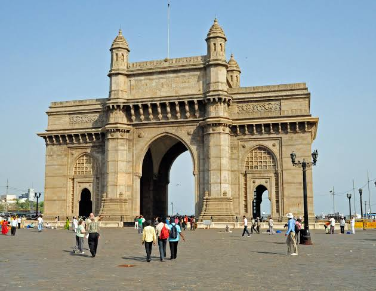

12:38 AM 11-2-16
Meenakshi Amman Temple is a historic Hindu temple located on the southern bank of the Vaigai River[2] in the temple city of Madurai, Tamil Nadu, India. It is dedicated to Parvati, known as Meenakshi, and her consort, Shiva, here named Sundareswarar. The temple forms the heart and lifeline of the 2,500-year-old city of Madurai and is a significant symbol for the Tamil people, mentioned since antiquity in Tamil literature though the present structure was built between 1623 and 1655 CE.It houses 14 gopurams (gateway towers), ranging from 45–50m in height.
The Gateway of India is a monument built during the British Rule in Mumbai City of Maharashtra state in Western India .It is located on the waterfront in the Apollo Bunder area in South Mumbai and overlooks the Arabian Sea.The structure is a basalt arch, 26 metres (85 feet) high. It lies at the end of Chhatrapati Shivaji Marg at the water's edge in Mumbai Harbour.[5] It was a crude jetty used by the fishing community which was later renovated and used as a landing place for British governors and other prominent people. In earlier times, it would have been the first structure that visitors arriving by boat in Mumbai would have seen.